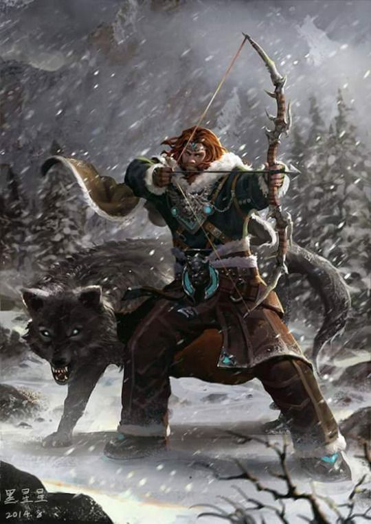

De aparência áspera e
selvagem, um humano
espreita sozinho através das
sombras das árvores, caçando
os orcs que ele sabe estarem
planejando um assalto a uma
fazenda próxima. Segurando
uma espada curta em cada mão,
ele se transforma em um vendaval
de aço, talando um inimigo após o outro. Após se evadir de um cone de ar congelante,
uma elfa encontra-se de pé e saca seu arco das costas, disparando uma flecha no dragão branco.
Ignorando a onda de medo que emana do dragão, assim como ignorou o frio do seu sopro, ela envia
uma flecha após a outro tentando encontrar as brechas entre as espessas escamas do dragão.
Erguendo sua mão para o alto, um meio-elfo assobia para o falcão que o circunda acima,
chamando o pássaro de volta para o seu lado. Sussurrando instruções em Élfico,
ele aponta para o urso-coruja que ele estava rastreando e envia o falcão para distrair a criatura enquanto
ele prepara seu arco. Longe do alvoroço das cidades e vilas, passando das divisas que abrigam a
fazendas mais longínquas dos horrores do ermo, entre as árvores densas de florestas sem trilhas e
através das vastas planícies vazias, os patrulheiros mantem sua vigília interminável.
CAÇADORES MORTAIS
Guerreiros da natureza, os patrulheiros se especializaram em caçar monstros que ameaçam as margens da civilização
– assaltantes humanoides, bestas e monstruosidades devastadoras, gigantes terríveis e dragões mortais. Eles aprendem a rastrear suas
presas como os predadores fazem, movendo-se silenciosamente nas florestas e se escondendo atrás
de arbustos e pedregulhos. Os patrulheiros focam seu treinamento de combate em técnicas que sejam especialmente úteis contra seus inimigos
favoritos específicos. Graças a sua familiaridade no ambiente selvagem,
os patrulheiros adquiriram a habilidade de conjurar magias atreladas ao poder da natureza, similar ao que o druida faz. Suas magias,
assim como suas habilidades de combate, enfatizam a velocidade, furtividade e caça. Os talentos e habilidades de um patrulheiro
são afinados com o foco mortal na árdua tarefa de proteger as fronteiras.
AVENTUREIROS INDEPENDENTES
Apesar de um patrulheiro ganhar a vida como um caçador, um guia ou um rastreador, a verdadeira vocação de um patrulheiro é defender as
zonas periféricas da civilização das investidas de monstros e hordas de humanoides que vem das regiões selvagens. Em alguns lugares,
os patrulheiros se reúnem em ordens secretas ou juntam forças com os círculos druídicos. Muitos patrulheiros, no entanto,
são independentes até cometerem um erro, sabendo que, quando um dragão ou um bando de orcs ataca, um patrulheiro deve ser a primeira
– e possivelmente a última – linha de defesa. Essa independência feroz faz dos patrulheiros ótimos aventureiros,
já que eles são acostumados a vida longe do conforto de uma cama seca e banho quente.
Confrontado com aventureiros mais urbanos que reclamam e choramingam sobre a dureza da vida no ambiente selvagem,
os patrulheiros respondem com uma mistura de divertimento, frustração e compaixão. Mas, eles rapidamente aprendem
que os outros aventureiros que podem carregar seus próprios fardos em uma luta contra os inimigos da civilização
são dignos de qualquer encargo adicional. Gente mimada da cidade podem não saber como se alimentar ou encontrar água fresca nas florestas,
mas eles compensam isso de outras maneiras.
CRIANDO UM PATRULHEIRO
Quando você for criar seu personagem patrulheiro, considere a natureza do treinamento que lhe concedeu suas capacidades particulares.
Você treinou com um mentor exclusivo, viajando pelas florestas juntos até que você dominasse os modos de patrulheiro?
Você abandonou seu aprendizado ou seu mentor foi assassinado – talvez pelo menos tipo de monstro que se tornou seu inimigo favorito?
Ou talvez você tenha aprendido suas perícias como parte de um bando de patrulheiros afiliados a um círculo druídico, treinados em
caminhos místicos assim como em conhecimento selvagem. Você pode ser autodidata, um recluso que aprendeu perícias de combate,
rastreio e, até mesmo, conexões mágicas com a natureza devido a necessidade de sobreviver no ambiente selvagem.
Qual a fonte do seu ódio particular por um certo tipo de inimigo? Um monstro matou alguém que você amava ou destruiu sua vila natal?
Ou você viu muita da destruição causada por esses monstros e se impeliu a acabar com suas depredações?
Sua carreira como aventureiro é uma continuação do seu trabalho em proteger as fronteiras, ou uma mudança significativa?
O que fez você se juntar a um bando de aventureiros? Você achou que seria desafiador ensinar novos aliados os caminhos da natureza,
ou você apreciou a libertação da solidão que eles ofereceram?
Fonte: Vertente Geek